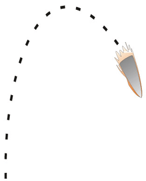

Bullet
Conceptual questions on free fall and motion on an incline without friction.
A gun fires a bullet vertically upwards. The bullet flies up, reaches some maximum height, and then falls back down to the ground.
Neglecting air resistance, once the bullet has left the gun, the magnitude of its acceleration is 
Largest immediately after the bullet leaves the gun
Largest immediately before the bullet reaches the ground
Largest when it reaches maximum height
None of the above